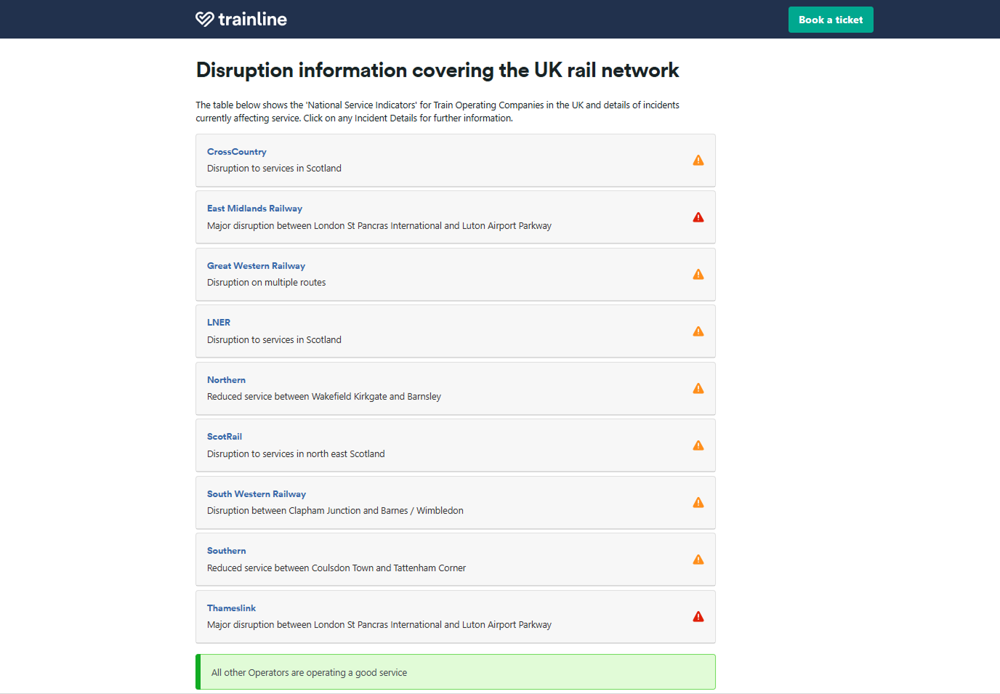
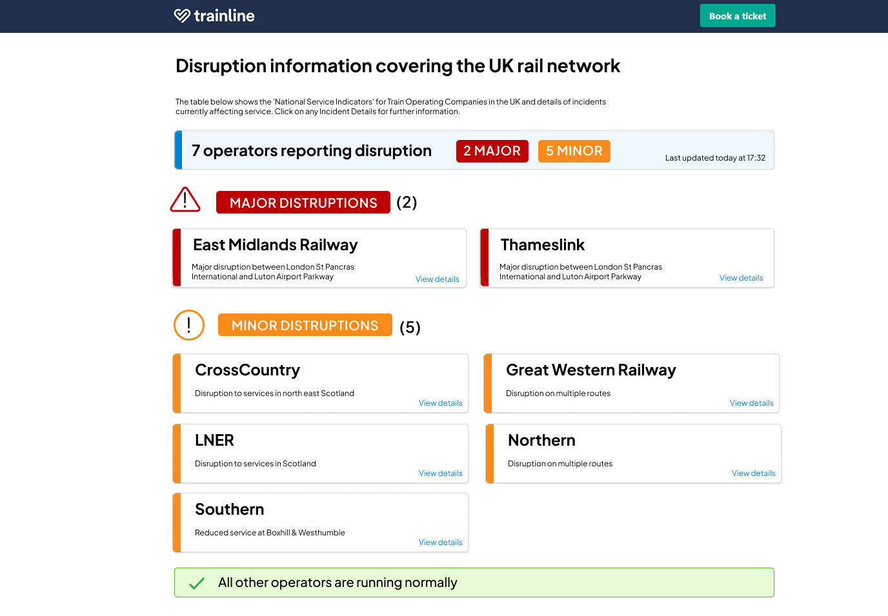

UX Redesign
Inclusive
AAA Research
Role
UX Researcher
Platform
Web Concept
Target
WCAG 2.2 AAA
Overview
Travel disruptions are high-stress moments. My work involved evaluating the Trainline interface through the lens of WCAG 2.2 AAA compliance, ensuring that critical travel information is accessible to everyone, regardless of visual or cognitive impairment.
Existing Evaluation
"The status colors are hard to distinguish in bright sunlight."
"I have to scroll through every single operator to find mine."
"Screen readers struggle to identify which alerts are critical."
Original interface analysis

Design Goals
Research-Led Hierarchy
My research identified that users prioritise "Severity" over "Operator Logos." I restructured the information architecture to surface the most critical disruptions at the top, using plain language to reduce cognitive load.
WCAG 2.2 AAA Standards
To achieve AAA compliance, I ensured a 7:1 contrast ratio for all critical text and removed color-only indicators, ensuring the interface is fully functional for those with total color blindness.
Accessibility Implementation
-
01
Text Contrast (AAA)
Strict adherence to 7:1 contrast ratios for all informative text.
-
02
Non-Visual Context
Enhanced ARIA labels to communicate disruption severity to screen readers.
-
03
Input Focus States
High-visibility focus rings for 100% keyboard-only navigation.
Final Outcome
The final design reduces time-to-insight by grouping major disruptions and providing clear, accessible calls to action. It balances Trainline's brand identity with the rigorous requirements of universal design.
High-fidelity redesigned interface
